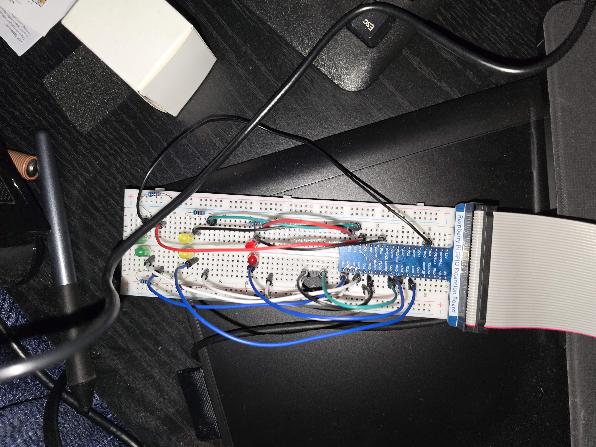
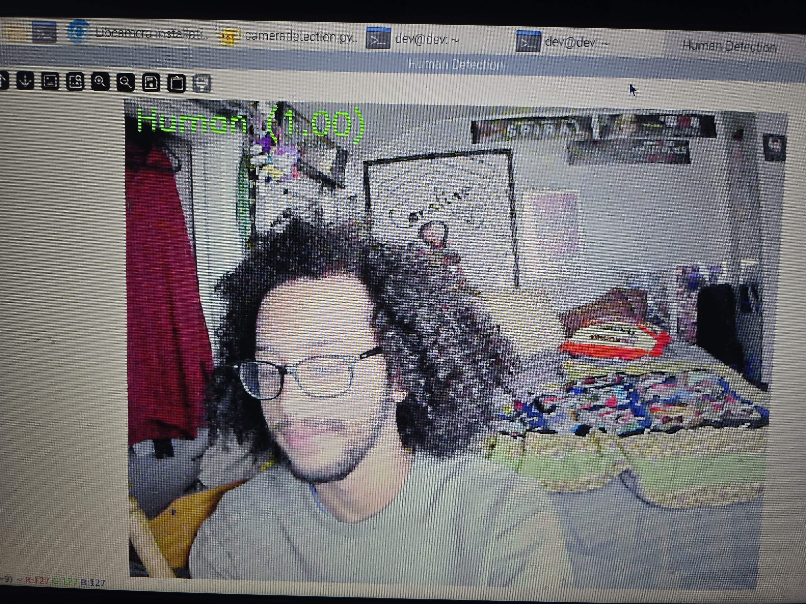
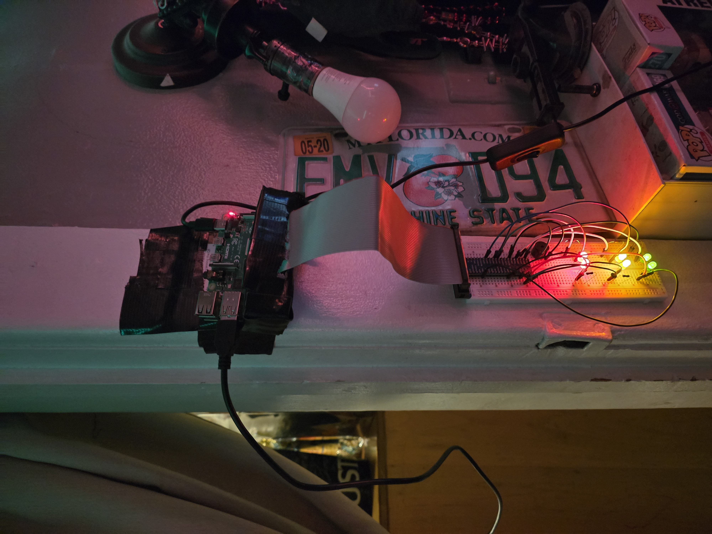

Raspberry Pi Human Detection System
An embedded computer vision system that uses a custom TensorFlow Lite object detection model running on a Raspberry Pi to detect nearby people in real time. Detection confidence is displayed using a multi-stage LED indicator connected through a Raspberry Pi GPIO breadboard circuit, while a buzzer activates when confidence reaches a critical threshold.

Project Overview
This project runs a custom-trained TensorFlow Lite model on a Raspberry Pi to detect whether a person is present in the camera's field of view. Each frame from the camera is resized to 128x128, normalized, and fed through the model, which outputs a confidence score between 0 and 1 — converted to a percentage and used to drive the rest of the system in real time.
That confidence score controls a 6-LED indicator wired through a GPIO breadboard circuit, lighting LEDs in pairs as confidence crosses 50%, 70%, and 85%. At the 85% threshold, a buzzer also activates as a critical alert. The project includes both a GUI version, which shows a live OpenCV window with the detection label overlaid on the video feed, and a headless version that prints confidence readings to the terminal for running without a display, such as over SSH.
Development Gallery

The GPIO breadboard circuit — 6 LEDs wired in pairs plus a buzzer, driven directly by the Pi's GPIO pins.

The live detection window, showing the "Human"/"Not Human" label and confidence percentage overlaid on the camera feed.

The full setup — Raspberry Pi, camera, and breadboard circuit all connected and running together.
Key Features
- Custom TensorFlow Lite model for real-time human detection
- Live camera feed processed frame-by-frame on the Pi
- Multi-stage LED indicator — LEDs light in pairs at 50%, 70%, and 85% confidence
- Buzzer alert triggered at 85%+ confidence for a critical warning
- GUI mode with a live OpenCV window and on-screen confidence label
- Headless/debug mode that prints confidence to the terminal for display-free operation
- Clean GPIO shutdown on exit to reset all LEDs and the buzzer
Technologies Used
Language: Python
Machine Learning: TensorFlow Lite (custom-trained model)
Computer Vision: OpenCV
Hardware: Raspberry Pi, camera module, GPIO breadboard circuit (6 LEDs, buzzer)
Tools: Python, gpiozero, Git, GitHub
Challenges
Getting the model to run efficiently enough for real-time detection on the Pi's limited hardware was a core challenge, which is part of why the final model runs through TensorFlow Lite rather than a full TensorFlow model.
Wiring and debugging the GPIO circuit added another layer of difficulty on top of the software — making sure the LED pairs and buzzer triggered at the right confidence thresholds, and that everything reset cleanly if the script was interrupted, took real trial and error with the breadboard.
What I Learned
This project gave me hands-on experience deploying a machine learning model onto embedded hardware, including the tradeoffs involved in converting a model to TensorFlow Lite to make it feasible for a Raspberry Pi.
It also strengthened my understanding of GPIO programming with gpiozero, and how to tie real-time software output (a model's confidence score) directly to physical hardware behavior like LEDs and a buzzer.
Future Improvements
- Improve model accuracy with a larger, more varied training dataset
- Add logging of detection events with timestamps
- Send remote alerts (e.g. a notification) when critical confidence is reached
- Optimize inference speed further for smoother real-time performance
- Expand detection beyond a single person to detect and count multiple people